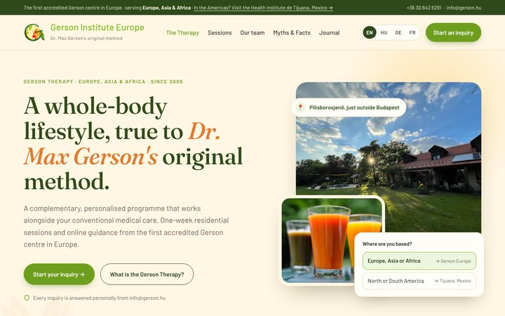
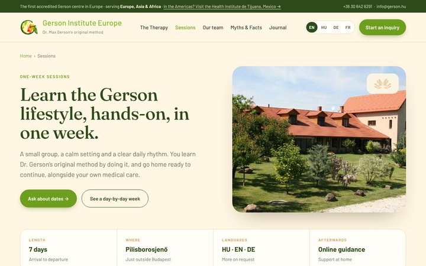
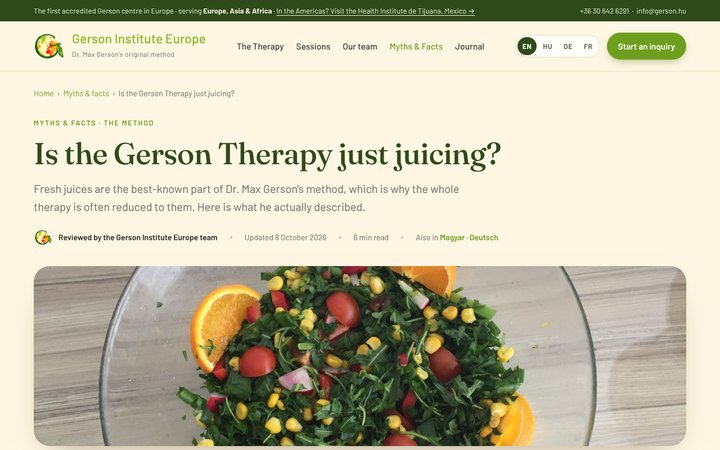
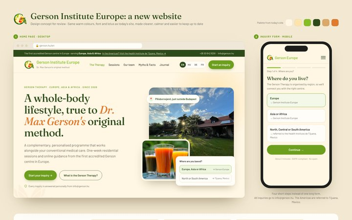

Weboldal-terv előnézet
Gerson Intézet Európa · látványterv véleményezésre, nem az élő oldal
Használat: kattintson az egyik oldalra, majd a menüvel és a gombokkal lépkedjen tovább. Az oldalak tetején lévő nyelvválasztóval válthat nyelvet. Az oldalak számítógép-képernyőre készültek; a kész honlap mobilon is jól fog működni. A „Példa” jelölésű szövegek helykitöltők, ezeket még egyeztetni kell.

FőoldalFontos tudnivaló, alapelvek, egy Gerson-nap, csapatunk, a ház, a turnusok és az érdeklődési űrlap

Egyhetes turnusokIdőpontok, mit tartalmaz, a hét napról napra, online tanácsadás és kérdések

Tévhitek és tények cikk„Csak gyümölcslevekről szól a Gerson-terápia?” – forrásokkal

A koncepció áttekintéseMobilos űrlap, szerkesztőfelület, Google, az érdeklődések útja és a tárhely (angolul)